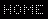

october 2020
is an interactive stand-alone forth for
Authors:
Albert Nijhof & Willem Ouwerkerk
(Mail us)
Last update 30oct2020
noForth
is an interactive stand-alone forth for
RISC-V (32bits).
and
MSP430 (16bits)
Authors:
Albert Nijhof & Willem Ouwerkerk
(Mail us)
Last update 30oct2020
Put the noForth image on a processor board and then program the chip using any serial terminal.
Now that there is also a noForth for RISC-V processors (october 2020), we have the following noForth variants: r, rv, rc, rcv, and m, mv, mc, mcv.| r
m c v |
= for RISC-V
= for MSP430 = compact = with vocabularies |
The priorities for noForth: 1. robust and comfortable, 2. fast, 3. compact.
For the compact variants: 1. robust and comfortable, 2. compact, 3. fast.
"Low Power" noForths (for MSP430) are marked with a dash: noForth m-, mv-, etc.
Downloads
In the list below you find the noForth images for MSP430 (Intel-hex) and for RISC-V (binary). It may be necessary to adapt the CONFIG list (settings for Baud rate, Clock speed, etc.) in the noForth Intel-hex files. Follow the instructions in the README file.The image contains only the noForth kernel without the tools, assembler or disassembler.
Once noForth is in the chip you have to include the file
<noforth r tools.f>
or <noforth m tools.f> for .S WORDS MANY DMP and SEE.
 noForth binary files for RISC-V (201030 yymmdd)
noForth binary files for RISC-V (201030 yymmdd)
RISC-V GD32VF noforths gd32vf103.zipnoForth Intel-hex files for MSP430 (201030)
MSP430FR2433 noforths 2433.zip MSP430FR2x55 noforths 2x55.zip MSP430FR5739 noforths 5739.zip MSP430FR5969 noforths 59x9.zip MSP430FR5994 noforths 5994.zip MSP430F149 noforths 149.zip MSP430G2553 noforths 2553.zip MSP430G2955 noforths 2955.zip
How to get noForth in ..
How to get noForth in the RISC-V?howto seeed studio gd32vf.pdf
howto sipeed longan nano.pdf
How to get noForth in the MSP430?
Put the noForth image in the MSP430 with the 'UniFlash' program (by Texas Instruments).
See howto use uniflash
Uniflash will not function with the MSP430F149. See howto f149
With the FET-interface on the MSP-EXPFR2355 all MSP430 chips (with the exception of the 100-series) can be programmed. See msp-exp430fr2355 as programmer
Hardware documentation
RISC-V boardsseeed studio gd32vf dev board.pdf \ 128kB FROM, 32kB RAM sipeed longan nano board.pdf \ 128kB FROM, 32kB RAMMSP430 boards
msp430f149 minim core board.pdf \ 61kB FROM, 9600 Baud rate msp430f149 dupont board.pdf \ 61kB FROM, 9600 msp430f149 mini-v3 board.pdf \ 61kB FROM, 9600 msp-exp430g2.pdf \ 16kB FROM, 9600 msp-exp430g2et.pdf \ 16kB FROM, 9600 msp-exp430fr2433.pdf \ 16kB FRAM, 115k2 msp-exp430fr5739.pdf \ 16kB FRAM, 9600 msp-exp430fr2355.pdf \ 32kB FRAM, 115k2 msp-exp430fr5969.pdf \ 64kB FRAM, 115k2 msp-exp430fr5994.pdf \ 256kB FRAM, 115k2 msp430g2553 on egel kit.pdf \ 16kB FROM, 38k4 msp430g2955 on cosey robot.pdf \ 56kB FROM, 9600
Egel project (MSP430)
| The Egel project consists of about 50 elementary examples of hardware control with noForth on the MSP430. In each example you find a file with forth code, documentation and links to more information on the internet. |
Four answered questions about noForth
-
What do I need to get my program compiled in noForth?
noForth receives the text, translates it into code and compiles that in flashrom. You need a simple communication program which is able to send text to noForth on the chip. (Teraterm for Windows, CoolTerm for OS X, e4thcom for Linux, ... ) Will compiled code stay in flashrom after a power off/on?
No, unless you have sent the commandFREEZE.Is it possible to erase 'frozen' code?
Yes. Executing a MARKER or a SHIELD erases the code that is compiled after it.Is it possible to change clock speed, Baud rate, serial port, port and pin for the APP button from within noForth?
Yes, see the documentation in r/configs msp430.zip and configs gd32vf.html for RISC-V).
Before you start
-
Since noForth compiles in FlashROM,
it is unavoidable that some words don't behave exactly as the standard prescribes.
We tried, without restricting the programming freedom, to minimize the aberrations from the standard.See readme-1 and readme-2 below. This concerns the words:
HERE ALLOT ! C! +! MOVE (only RAM)
, C, (only ROM)
CREATE - noForth skips characters greater than hex 7E in the input stream.
-
WORDdoes not exist in noForth. UseBL-WORDinstead ofBL WORD.Conflicting names
-
Compiling: the NEXT of FOR-NEXT.NEXTis state-smart
Executing: the assembler-NEXT of the inner interpreter. -
Only for MSP430 without vocabularies:
Compiling: the forth-# for number printing.#is state-smart
Executing: the assembler-# that denotes a literal. -
MSP430 only:
In noForth assembler the msp430-AND isANDandXOR(forth vs. assembly)BIA.
In noForth assembler the msp430-XOR isBIX.
This is in harmony with the existing msp430 commandsBICandBIS.Documentation and program files
GeneralReadme-1 \ RAM and ROM Readme-2 \ FREEZE and FORGET session1.pdf \ BASE and the prompt input stream.pdf \ About the input stream noforth documentation.pdf \ 201030 how noforth is made.pdf
For noForth r (RISC-V)noforth r tools.f \ 201030 noforth r das.f \ noForth r disassembler) 201030 noforth r more words.f \ Code for more standard words noforth r asm.f \ noForth r assembler risc-v asm notation.pdf \ RISC-V asm notation in noForth commacode for risc-v.pdf \ How to use it
For noForth m (MSP430)noforth m tools.f \ 201030 noforth m das.f \ noForth m disassembler 201030 noforth m more words.f \ Code for more standard words noforth m asm.f \ noForth m assembler msp430 asm notation.pdf \ MSP430 asm notation in noForth commacode for msp430.pdf
Beethoven430 \ Music on the launchpad noforth m metacompiler.zip \ 200202
This noForth software is free software: you can redistribute it and/or modify it under the terms of the GNU General Public License as published by the Free Software Foundation, either version 3 of the License, or (at your option) any later version. This software is distributed in the hope that it will be useful, but WITHOUT ANY WARRANTY; without even the implied warranty of MERCHANTABILITY or FITNESS FOR A PARTICULAR PURPOSE. See the GNU General Public License for more details.
How to make a turnkey system
 ' <my-application> TO APP FREEZE
' <my-application> TO APP FREEZE
Put the application token in the value APP and type FREEZE . The execution of the APP vector can be bypassed with a switch.noForth is written 'from scratch'
- Floored division
- With decompiler
- CATCH and THROW
- With meta compiler
- Fast FIND (eight threads)
- KEY KEY? and EMIT are vectored
- Adjustable prompt, for extra information
- VALUE with prefixes TO +TO and INCR
- Missing core words are available as source
- Assembler and disassembler available as source
- Forget-functions (MARKER and SHIELD) do not spill Flash memory
- When an error occurs while loading a file, noForth will ignore the rest of the file
- ...
